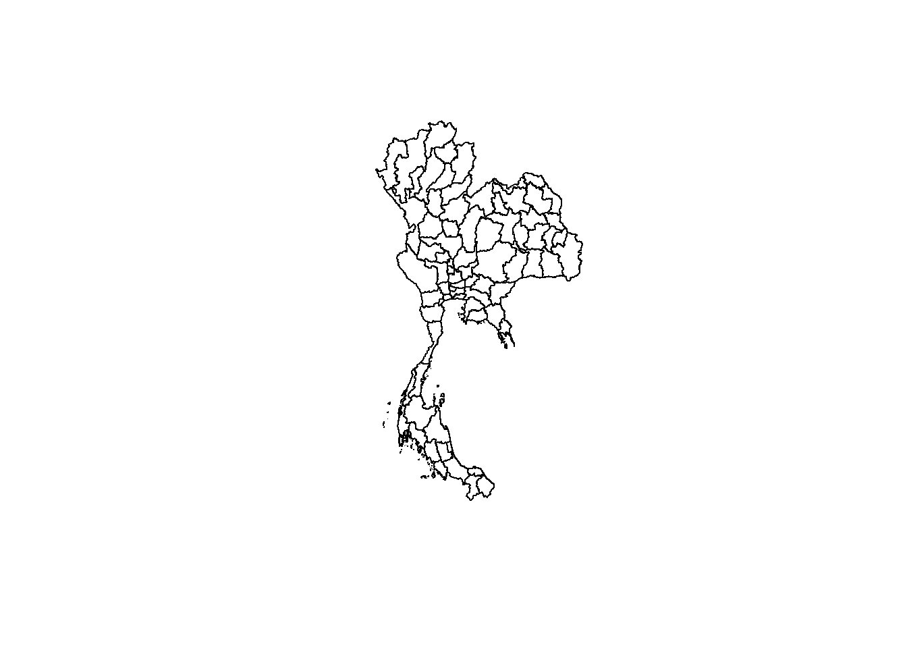
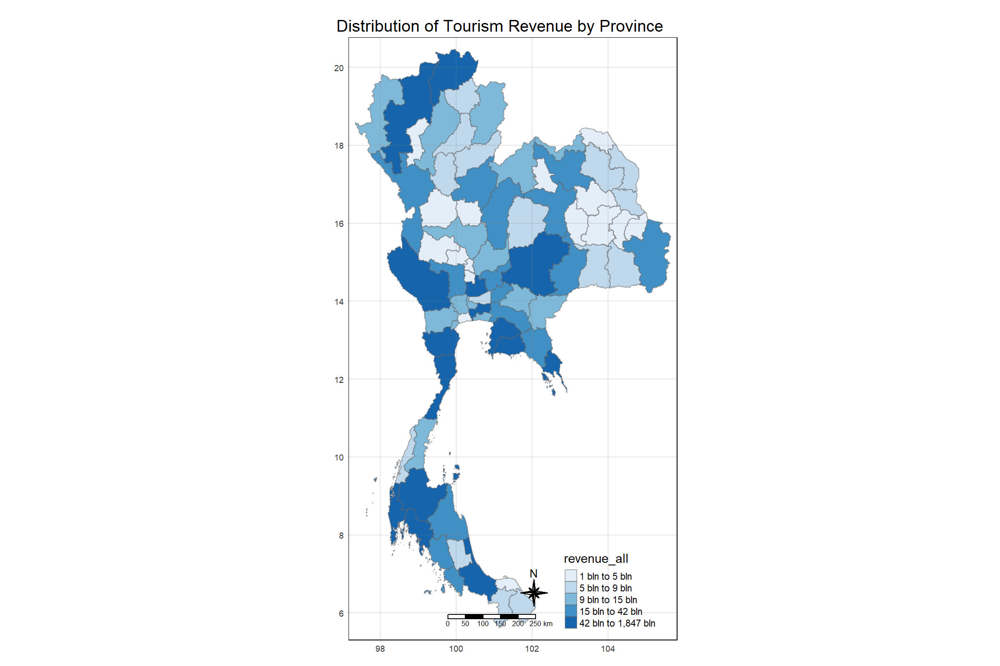

pacman::p_load(tidyverse, sfdep, sf, tmap)Take Home Exercise 02
Background
Tourism has been a key driver of Thailand’s gross domestic product (GDP), accounting for up to 20% of it. The COVID-19 pandemic caused the tourism revenue (from domestic and international tourism) to crash to US$24 billion in 2020, from US$90 billion in 2019.
Objectives
Using appropriate global and local spatial autocorrelation analysis and emerging hotspot analysis, I would like to find out:
- If the key indicators of tourism economy of Thailand are independent from space and space and time.
- If the tourism economy is indeed spatial and spatio-temporal dependent.
- If so, detect where the clusters and outliers are, and the emerging hotpot and cold spot areas.
Study Area
The study area will be Thailand (sf_polygon features) at province level.
Data Sources
(saved under ‘data’ folder)
Thailand Domestic Tourism Statistics 2019-2023 from Kaggle
Thailand - Subnational Administrative Boundaries from HDX…Click here to download here
1 Setting Up
1.1 Loading R Packages
1.2 Loading Datasets
1.2.1 Thailand Subnational Adminstrative Boundaries
# Load Thailand Province from HDX
th_bound_l1 <- st_read(dsn = "data/tha_adm_rtsd_itos_20210121_shp/", layer = "tha_admbnda_adm1_rtsd_20220121")Reading layer `tha_admbnda_adm1_rtsd_20220121' from data source
`C:\Users\Henry\Desktop\SMU Masters\2024-2025 T1\Geospatial Analytics & Applications\Project\GeospatialWebsite\Take-Home_Ex\Take-Home_Ex_02\data\tha_adm_rtsd_itos_20210121_shp'
using driver `ESRI Shapefile'
Simple feature collection with 77 features and 16 fields
Geometry type: MULTIPOLYGON
Dimension: XY
Bounding box: xmin: 97.34336 ymin: 5.613038 xmax: 105.637 ymax: 20.46507
Geodetic CRS: WGS 84glimpse(th_bound_l1)Rows: 77
Columns: 17
$ Shape_Leng <dbl> 2.417227, 1.695100, 1.251111, 1.884945, 3.041716, 1.739908,…
$ Shape_Area <dbl> 0.13133873, 0.07926199, 0.05323766, 0.12698345, 0.21393797,…
$ ADM1_EN <chr> "Bangkok", "Samut Prakan", "Nonthaburi", "Pathum Thani", "P…
$ ADM1_TH <chr> "กรุงเทพมหานคร", "สมุทรปราการ", "นนทบุรี", "ปทุมธานี", "พระนครศรีอ…
$ ADM1_PCODE <chr> "TH10", "TH11", "TH12", "TH13", "TH14", "TH15", "TH16", "TH…
$ ADM1_REF <chr> NA, NA, NA, NA, NA, NA, NA, NA, NA, NA, NA, NA, NA, NA, NA,…
$ ADM1ALT1EN <chr> NA, NA, NA, NA, NA, NA, NA, NA, NA, NA, NA, NA, NA, NA, NA,…
$ ADM1ALT2EN <chr> NA, NA, NA, NA, NA, NA, NA, NA, NA, NA, NA, NA, NA, NA, NA,…
$ ADM1ALT1TH <chr> NA, NA, NA, NA, NA, NA, NA, NA, NA, NA, NA, NA, NA, NA, NA,…
$ ADM1ALT2TH <chr> NA, NA, NA, NA, NA, NA, NA, NA, NA, NA, NA, NA, NA, NA, NA,…
$ ADM0_EN <chr> "Thailand", "Thailand", "Thailand", "Thailand", "Thailand",…
$ ADM0_TH <chr> "ประเทศไทย", "ประเทศไทย", "ประเทศไทย", "ประเทศไทย", "ประเทศ…
$ ADM0_PCODE <chr> "TH", "TH", "TH", "TH", "TH", "TH", "TH", "TH", "TH", "TH",…
$ date <date> 2019-02-18, 2019-02-18, 2019-02-18, 2019-02-18, 2019-02-18…
$ validOn <date> 2022-01-22, 2022-01-22, 2022-01-22, 2022-01-22, 2022-01-22…
$ validTo <date> -001-11-30, -001-11-30, -001-11-30, -001-11-30, -001-11-30…
$ geometry <MULTIPOLYGON [°]> MULTIPOLYGON (((100.6139 13..., MULTIPOLYGON (…# Visualize the boundaries
plot(st_geometry(th_bound_l1))
1.2.2 Thailand Tourism Data
tbl_tourism <- read_csv('data/archive/thailand_domestic_tourism_2019_2023_ver2.csv')Rows: 30800 Columns: 7
── Column specification ────────────────────────────────────────────────────────
Delimiter: ","
chr (5): province_thai, province_eng, region_thai, region_eng, variable
dbl (1): value
date (1): date
ℹ Use `spec()` to retrieve the full column specification for this data.
ℹ Specify the column types or set `show_col_types = FALSE` to quiet this message.glimpse(tbl_tourism)Rows: 30,800
Columns: 7
$ date <date> 2019-01-01, 2019-01-01, 2019-01-01, 2019-01-01, 2019-01…
$ province_thai <chr> "กรุงเทพมหานคร", "ลพบุรี", "พระนครศรีอยุธยา", "สระบุรี", "ชัยนาท…
$ province_eng <chr> "Bangkok", "Lopburi", "Phra Nakhon Si Ayutthaya", "Sarab…
$ region_thai <chr> "ภาคกลาง", "ภาคกลาง", "ภาคกลาง", "ภาคกลาง", "ภาคกลาง", "…
$ region_eng <chr> "central", "central", "central", "central", "central", "…
$ variable <chr> "ratio_tourist_stay", "ratio_tourist_stay", "ratio_touri…
$ value <dbl> 93.37, 61.32, 73.37, 67.33, 79.31, 71.70, 64.65, 71.21, …# Find values in Th bound that are not in Tourism Data
only_in_th_bound_l1 <- anti_join(th_bound_l1, tbl_tourism, by = c("ADM1_EN" = "province_eng")) %>% pull(ADM1_EN)
# Find values in Tourism Data that are not in Th Bound
only_in_tbl_tourism <- anti_join(tbl_tourism, th_bound_l1, by = c("province_eng" = "ADM1_EN")) %>% pull(province_eng)
# See all values
unmatched_values <- union(only_in_th_bound_l1, only_in_tbl_tourism)
print(unmatched_values) [1] "Lop Buri" "Chai Nat" "Chon Buri" "Prachin Buri"
[5] "Buri Ram" "Si Sa Ket" "Nong Bua Lam Phu" "Phangnga"
[9] "Lopburi" "Chainat" "Chonburi" "Prachinburi"
[13] "Phang Nga" "Buriram" "Sisaket" "Nong Bua Lamphu" # Data processing
tbl_tourism_wide <- tbl_tourism %>%
mutate(province_eng = recode(province_eng,
"Lopburi" = "Lop Buri",
"Chainat" = "Chai Nat",
"Chonburi" = "Chon Buri",
"Prachinburi" = "Prachin Buri",
"Phang Nga" = "Phangnga",
"Buriram" = "Buri Ram",
"Sisaket" = "Si Sa Ket",
"Nong Bua Lamphu" = "Nong Bua Lam Phu"
),
province_eng = trimws(province_eng)
) %>%
pivot_wider(., names_from = "variable", values_from = "value") %>%
mutate(total_avail_room = round(no_tourist_stay/ratio_tourist_stay*100,0))# Summarize across all years
tbl_tourism_sum_all <- tbl_tourism_wide %>%
group_by(province_eng, province_thai, region_thai, region_eng) %>%
summarize(
ratio_tourist_stay = mean(ratio_tourist_stay, na.rm = TRUE),
no_tourist_stay = sum(no_tourist_stay, na.rm = TRUE),
no_tourist_all = sum(no_tourist_all, na.rm = TRUE),
no_tourist_thai = sum(no_tourist_thai, na.rm = TRUE),
no_tourist_foreign = sum(no_tourist_foreign, na.rm = TRUE),
revenue_all = sum(revenue_all, na.rm = TRUE),
revenue_thai = sum(revenue_thai, na.rm = TRUE),
revenue_foreign = sum(revenue_foreign, na.rm = TRUE),
total_avail_room = sum(total_avail_room, na.rm = TRUE)
) %>%
ungroup()`summarise()` has grouped output by 'province_eng', 'province_thai',
'region_thai'. You can override using the `.groups` argument.# Summarize across all years
tbl_tourism_sum_year <- tbl_tourism_wide %>%
mutate(year = year(date)) %>%
group_by(year, province_eng, province_thai, region_thai, region_eng) %>%
summarize(
ratio_tourist_stay = mean(ratio_tourist_stay, na.rm = TRUE),
no_tourist_stay = sum(no_tourist_stay, na.rm = TRUE),
no_tourist_all = sum(no_tourist_all, na.rm = TRUE),
no_tourist_thai = sum(no_tourist_thai, na.rm = TRUE),
no_tourist_foreign = sum(no_tourist_foreign, na.rm = TRUE),
revenue_all = sum(revenue_all, na.rm = TRUE),
revenue_thai = sum(revenue_thai, na.rm = TRUE),
revenue_foreign = sum(revenue_foreign, na.rm = TRUE),
total_avail_room = sum(total_avail_room, na.rm = TRUE)
) %>%
ungroup()`summarise()` has grouped output by 'year', 'province_eng', 'province_thai',
'region_thai'. You can override using the `.groups` argument.1.2.3 Merge Tourism data
# Join with tourism data all
th_bound_tour_all <- left_join(th_bound_l1, tbl_tourism_sum_all, by = c("ADM1_EN" = "province_eng"))
# Join with tourism data by year
th_bound_tour_year <- left_join(th_bound_l1, tbl_tourism_sum_year, by = c("ADM1_EN" = "province_eng")) tmap_mode("plot")tmap mode set to plottingtm_shape(th_bound_tour_all) +
tm_fill("revenue_all",
style = "quantile",
palette = "Blues",
title = "revenue_all") +
tm_layout(main.title = "Distribution of Tourism Revenue by Province",
main.title.position = "center",
main.title.size = 1.2,
legend.height = 0.45,
legend.width = 0.35,
frame = TRUE) +
tm_borders(alpha = 0.5) +
tm_compass(type="8star", size = 2) +
tm_scale_bar() +
tm_grid(alpha =0.2)
# Export to processed sub-folder as RDS
write_rds(th_bound_tour_all, 'data/processed/th_bound_tour_all.rds')
write_rds(th_bound_tour_year, 'data/processed/th_bound_tour_year.rds')2 Exploratory Data Analysis
th_bound_tour_all <- th_bound_tour_all %>%
mutate(revenue_tourist_all = revenue_all/no_tourist_all,
revenue_tourist_thai = revenue_thai/no_tourist_thai,
revenue_tourist_foreign = revenue_foreign/no_tourist_foreign,
revenue_occ = revenue_all/no_tourist_stay,
tourist_occ = no_tourist_all/no_tourist_stay,
revenue_room = revenue_all/total_avail_room)3 Spatial Analysis of Thailand Tourism Key Indicators
set.seed(42)nb <- st_contiguity(th_bound_tour_all$geometry)# Step 1: Find the centroid of Phuket (or use the entire geometry)
phuket_geom <- th_bound_tour_all %>%
filter(ADM1_EN == "Phuket") %>%
st_geometry()
# Step 2: Find the centroids of all other regions
other_geoms <- th_bound_tour_all %>%
filter(ADM1_EN != "Phuket") %>%
st_geometry()# Step 3: Calculate the nearest neighbor using distance
nearest_region_index <- st_nearest_feature(phuket_geom, other_geoms)
phuket_index <- which(th_bound_tour_all$ADM1_EN == "Phuket")
nb[[phuket_index]] <- c(nearest_region_index)
nb[[nearest_region_index]] <- c(nb[[nearest_region_index]], phuket_index)3.1 Global Spatial Autocorrelation
wm_q <- th_bound_tour_all %>%
mutate(nb = nb,
wt = st_weights(nb, style = "W", allow_zero = TRUE),
.before = 1)longitude_cent <- map_dbl(th_bound_tour_all$geometry, ~st_centroid(.x)[[1]])
latitude_cent <- map_dbl(th_bound_tour_all$geometry, ~st_centroid(.x)[[2]])
longitude <- map_dbl(th_bound_tour_all$geometry, ~st_point_on_surface(.x)[[1]])
latitude <- map_dbl(th_bound_tour_all$geometry, ~st_point_on_surface(.x)[[2]])
coords <- cbind(longitude, latitude)
coords_cent <- cbind(longitude_cent, latitude_cent)plot(th_bound_tour_all$geometry, border="lightgrey")
points(coords, pch = 19, cex = 0.6, col = "red")
points(coords_cent, pch = 19, cex = 0.6, col = "blue")
moranI_rev <- global_moran(wm_q$revenue_tourist_all,
wm_q$nb,
wm_q$wt)
glimpse(moranI_rev)List of 2
$ I: num 0.279
$ K: num 24.8global_moran_test(wm_q$revenue_tourist_foreign,
wm_q$nb,
wm_q$wt)
Moran I test under randomisation
data: x
weights: listw
Moran I statistic standard deviate = 3.4908, p-value = 0.0002408
alternative hypothesis: greater
sample estimates:
Moran I statistic Expectation Variance
0.227887991 -0.013157895 0.004768127 global_moran_perm(wm_q$tourist_occ,
wm_q$nb,
wm_q$wt,
nsim = 999)
Monte-Carlo simulation of Moran I
data: x
weights: listw
number of simulations + 1: 1000
statistic = 0.25122, observed rank = 999, p-value = 0.002
alternative hypothesis: two.sided